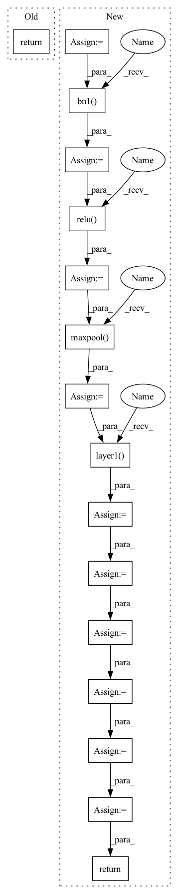

Pattern ID :11334

Before Change
def forward(self, x: Tensor) -> Tensor:
// pylint: disable=missing-function-docstring
return self._forward_impl(x)
def resnet50(**kwargs: Any) -> ResNet:
After Change
Returns:
Tensor: Output
x_in = self.conv1(x_in)
x_in = self.bn1(x_in)
x_in = self.relu(x_in)
x_in = self.maxpool(x_in)
x_in = self.layer1(x_in)
x_in = self.layer2(x_in)
x_in = self.layer3(x_in)
x_in = self.layer4(x_in)
x_in = self.avgpool(x_in)
x_in = torch.flatten(x_in, 1)
return self.fully_connected(x_in)
def resnet50(**kwargs: Any) -> ResNet:
In pattern: SUPERPATTERN
Frequency: 3
Non-data size: 16
Instances
Fragment ID: 38793688
Project Name: aimakerspace/peekingduck
Commit Name: 9bc45686b41e3f581446c4008f3d10c59caa4018
Time: 2022-07-03
Author: ngaitung.kwok@u.nus.edu
File Name: peekingduck/pipeline/nodes/model/mask_rcnnv1/mask_rcnn_files/resnet.py
M Class Name: ResNet
N Class Name: ResNet
M Method Name: forward(2)
N Method Name: forward(2)
M Parent Class: nn.Module
N Parent Class: nn.Module
M File Name: peekingduck/pipeline/nodes/model/mask_rcnnv1/mask_rcnn_files/resnet.py
N File Name: peekingduck/pipeline/nodes/model/mask_rcnnv1/mask_rcnn_files/resnet.py
M Start Line: 373
M End Line: 373
N Start Line: 376
N End Line: 388
'>
Before Change
def forward(self, x: Tensor) -> Tensor:
// pylint: disable=missing-function-docstring
return self._forward_impl(x)
def resnet50(**kwargs: Any) -> ResNet:
After Change
Returns:
Tensor: Output
x_in = self.conv1(x_in)
x_in = self.bn1(x_in)
x_in = self.relu(x_in)
x_in = self.maxpool(x_in)
x_in = self.layer1(x_in)
x_in = self.layer2(x_in)
x_in = self.layer3(x_in)
x_in = self.layer4(x_in)
x_in = self.avgpool(x_in)
x_in = torch.flatten(x_in, 1)
return self.fully_connected(x_in)
def resnet50(**kwargs: Any) -> ResNet:
'>
Fragment ID: 38793687
Project Name: aisingapore/peekingduck
Commit Name: 9bc45686b41e3f581446c4008f3d10c59caa4018
Time: 2022-07-03
Author: ngaitung.kwok@u.nus.edu
File Name: peekingduck/pipeline/nodes/model/mask_rcnnv1/mask_rcnn_files/resnet.py
M Class Name: ResNet
N Class Name: ResNet
M Method Name: forward(2)
N Method Name: forward(2)
M Parent Class: nn.Module
N Parent Class: nn.Module
M File Name: peekingduck/pipeline/nodes/model/mask_rcnnv1/mask_rcnn_files/resnet.py
N File Name: peekingduck/pipeline/nodes/model/mask_rcnnv1/mask_rcnn_files/resnet.py
M Start Line: 373
M End Line: 373
N Start Line: 376
N End Line: 388
'>
Before Change
return nn.Sequential(*layers)
def execute(self, x):
x = self.conv1(x)
x = self.bn1(x)
x = self.relu(x)
x = self.maxpool(x)
x = self.layer1(x)
x = self.layer2(x)
x = self.layer3(x)
x = self.layer4(x)
x = self.avgpool(x)
x = jt.reshape(x, [x.shape[0],-1])
x = self.fc(x)
return x
def Resnet18():
model = ResNet(BasicBlock, [2,2,2,2])
After Change
return x
def execute(self, x):
return self._forward_impl(x)
def _resnet(block, layers, **kwargs):
model = ResNet(block, layers, **kwargs)
'>
Fragment ID: 38793685
Project Name: jittor/jittor
Commit Name: 6e08781df42059bfe5731715d6acf32d33661347
Time: 2020-04-19
Author: 576825820@qq.com
File Name: python/jittor/models/resnet.py
M Class Name: ResNet
N Class Name: ResNet
M Method Name: execute(2)
N Method Name: execute(2)
M Parent Class: nn.Module
N Parent Class: Module
M File Name: python/jittor/models/resnet.py
N File Name: python/jittor/models/resnet.py
M Start Line: 204
M End Line: 217
N Start Line: 145
N End Line: 145